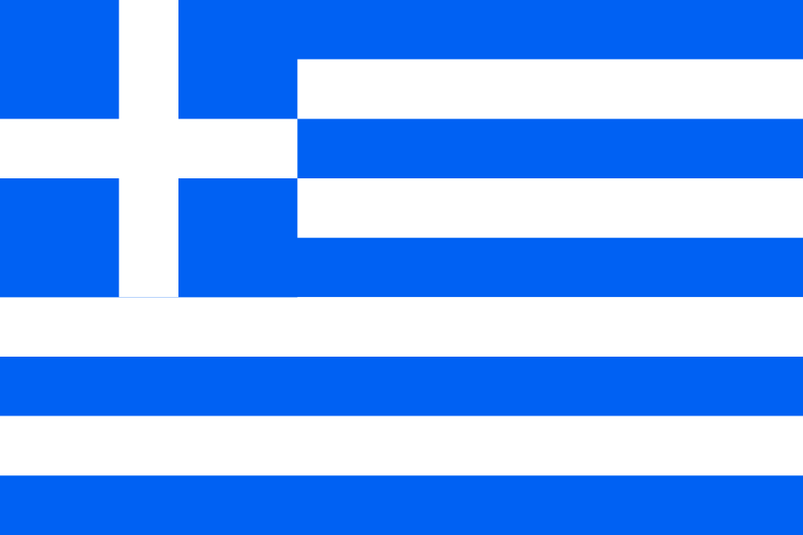
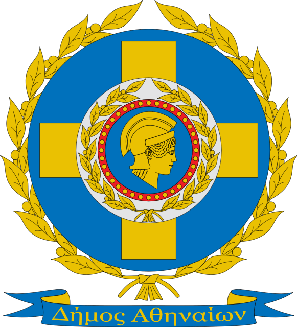
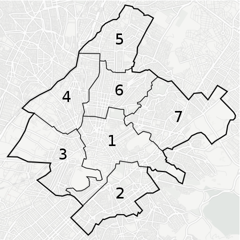

Viaja a Atenas
 Atenas, la capital de Grecia y la polis más grande del pasado, es uno de los destinos turísticos más importantes de Europa y del mundo, debido a que fue el centro cultural de la antigüedad y goza de muchos atractivos para los amantes de la historia.

Principales atractivos turísticos
- Acrópolis, con el Partenón, sus otros templos y estatuas...
- Templo de Hefesto
- Ruinas del templo de Zeus Olímpico
- Teatro de Herodes Ático
- Monte Licabeto
- Lago Maratón
- Museos
- Ágora y sus edifícios
Mapa de los distritos de Atenas:
Imágenes de: Maximilian Dörrbecker (Chumwa) - Trabajo propio, using OpenStreetMap data for the background, CC BY-SA 2.0, https://commons.wikimedia.org/w/index.php?curid=65279310, CC BY-SA 2.0, Enlace
De Christophe Meneboeuf - Trabajo propioMore of my work on my photoblog: http://www.pixinn.net, CC BY-SA 3.0, https://commons.wikimedia.org/w/index.php?curid=17628432, CC BY-SA 3.0, Enlace
De Tomisti - District borders: File:Athens_dimotiko_diamerisma.PNG.Background map: Map tiles by CartoDB, under CC BY 3.0. Data by OpenStreetMap, under ODbL., CC BY 3.0, https://commons.wikimedia.org/w/index.php?curid=38421394, CC BY 3.0, Enlace
De Maximilian Dörrbecker (Chumwa) - Trabajo propio, using OpenStreetMap data for the background, CC BY-SA 2.0, https://commons.wikimedia.org/w/index.php?curid=65279310, CC BY-SA 2.0, Enlace
De Emilio García from Parla, Spain - Interior del OAKAUploaded by Lapost, CC BY-SA 2.0, https://commons.wikimedia.org/w/index.php?curid=6779172, CC BY-SA 2.0, Enlace

Este obra está bajo una licencia de Creative Commons Reconocimiento-NoComercial-CompartirIgual 4.0 Internacional.